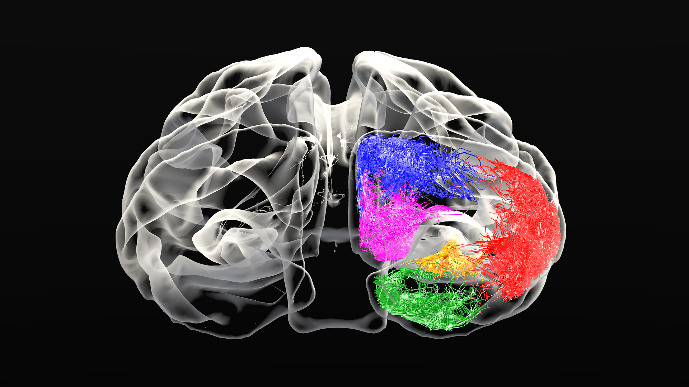

Guillaume Theaud
Phd student

Guillaume Theaud
I'm from France and I live in Canada since 2014. I have gotten my High school diploma in sciences in 2014. Then, I continued to study at University of Sherbrooke in the computer science department. I studied the image analysis and processing in computer science and I got my bachelor degree end 2017. Currently, I study at the Sherbrooke Connectivity Imaging Lab (SCIL) under the supervision of Pr. Descoteaux to obtain my master degree in sciences (MSc).
Ongoing projects
- State-of-the-art pipeline and QA
- Create a Nextflow pipeline with the state-of-the-art processes to analyse human brain database. The goal is to improve the speed and the reproductibility. This project is based on Nextflow and Singularity container.
- Tractography
- Adapt tractography algorithms to support pathological brains.
My Publications
Journals
Abstracts
Posters
My Photos


Contact Me
Université de Sherbrooke, Québec, Canada
Email: guillaume.theaud@usherbrooke.ca